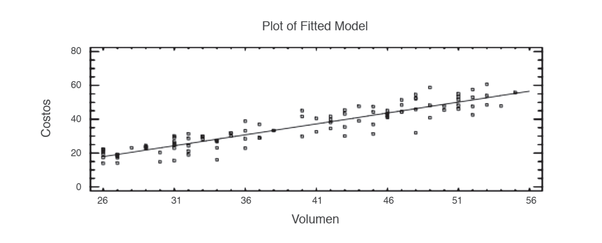
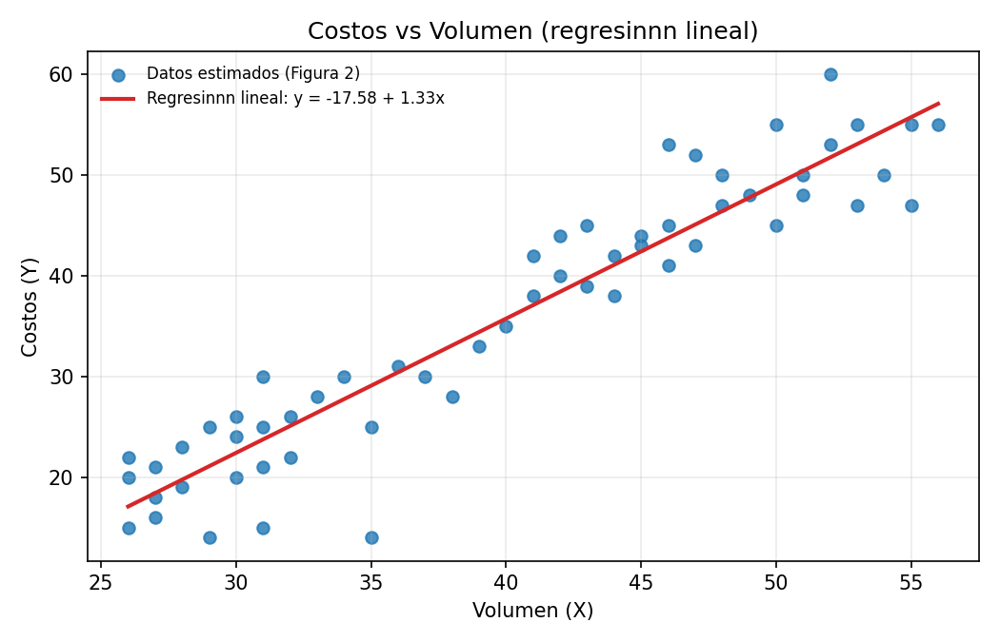
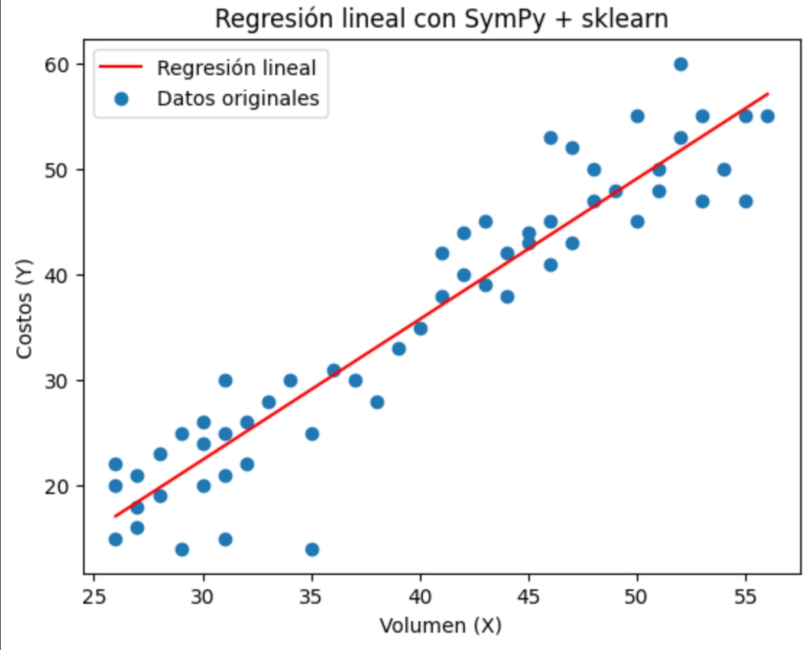

Resumen
El articulo plantea la necesidad de integrar datos de multiples sensores en agricultura de precision y en investigacion, especialmente cuando los dispositivos se encuentran en sitios remotos. Propone aprovechar el Internet de las Cosas para centralizar el almacenamiento y el procesamiento en la nube. En ese marco, el trabajo introduce la regresion lineal simple y multiple como base teorica para modelar relaciones entre variables ambientales (temperatura, luz, pH y oxigeno disuelto) y el crecimiento de microalgas.
Introduccion
El texto explica que la recoleccion tradicional de datos ambientales depende de equipos separados por variable, lo cual complica la integracion y el analisis conjunto. La adopcion del Internet de las Cosas permite conectar sensores y centralizar el procesamiento, habilitando analisis predictivos en tiempo oportuno. Como contexto biologico, se describe la microalga Chlorella sp., su potencial en biotecnologia y los factores que influyen en su crecimiento, que luego se usan para ejemplificar modelos de regresion.
Metodologia
El articulo desarrolla la base teorica de la regresion lineal simple y multiple: definicion de variables dependientes e independientes, interpretacion de la pendiente e intercepto, residuos, metodo de minimos cuadrados, supuestos del modelo y pruebas de hipotesis, asi como el uso de R2 para evaluar el ajuste. Se presenta un ejemplo conceptual (Figura 2, pagina 5) que ilustra la relacion entre costos y volumen.
La regresion lineal simple se expresa como Y = beta_0 + beta_1 X + e, donde beta_0 es el intercepto, beta_1 la pendiente y e el termino de error. Para cada punto, el valor estimado es y_hat = beta_0 + beta_1 x y el residuo es e = y - y_hat. El metodo de minimos cuadrados minimiza SSE = sum(y_i - y_hat_i)^2. Las soluciones cerradas son beta_1 = sum((x_i - x_bar)(y_i - y_bar)) / sum((x_i - x_bar)^2) y beta_0 = y_bar - beta_1 x_bar. El ajuste se resume con R2 = 1 - SSE / SST, donde SST = sum(y_i - y_bar)^2. En regresion multiple, el modelo general es Y = beta_0 + beta_1 X1 + ... + beta_p Xp + e y los parametros se obtienen con las ecuaciones normales (X^T X) beta = X^T y.
Trabajo del estudiante A partir de la Figura 2 del articulo, se estimaron puntos del grafico (con apoyo de Claude) y se aplico una regresion lineal en Excel con el archivo volumen_costos.xlsx. Este ejercicio busca explicar con datos la idea central de la regresion simple descrita en el texto, como un trabajo preliminar de validacion.
Para calcular la imagen imagen2.jpeg, se subieron los datos a Python y se uso sympy para expresar la ecuacion simbolica, junto con sklearn para el ajuste. El codigo utilizado fue:
df = pd.read_csv("https://raw.githubusercontent.com/Juan-Vega18/INTRODUC.-CIENCIA-DE-DATOS/refs/heads/main/data.csv", sep=";", decimal=",")
X = df[['Volumen (X)']]
Y = df[['Costos (Y)']]
reg = LinearRegression().fit(X, Y)
m = reg.coef_[0]
b = reg.intercept_
x = sp.Symbol('x')
y_expr = m*x + b
print("Ecuación de regresión:")
sp.pprint(y_expr)
# línea de regresión
x_vals = np.linspace(X.min(), X.max(), 100)
y_vals = m * x_vals + b
plt.plot(x_vals, y_vals, color='red', label="Regresión lineal")
plt.scatter(X, Y, label='Datos originales')
plt.xlabel("Volumen (X)")
plt.ylabel("Costos (Y)")
plt.legend()
plt.title("Regresión lineal con SymPy + sklearn")
plt.show()Resultados y discusion
Con los puntos estimados de la Figura 2 se obtuvo el modelo: y = -17.58 + 1.33x, con R2 = 0.891 (n = 58). La pendiente positiva indica que, en el ejemplo de costos vs volumen, los costos aumentan conforme se incrementa el volumen. El alto R2 sugiere un buen ajuste, coherente con el objetivo del articulo de mostrar la utilidad de la regresion simple como aproximacion inicial. Dado que el articulo es principalmente teorico, este resultado se interpreta como una demostracion preliminar de la relacion lineal, no como una validacion experimental completa.
Comparando la Figura 2 del paper (imagen proporcionada) con la regresion obtenida desde volumen_costos.xlsx, se observa la misma tendencia lineal ascendente. La diferencia principal es que el grafico del paper es un ejemplo conceptual, mientras que el grafico generado con los puntos estimados cuantifica la pendiente y el nivel de ajuste (R2).



| Metrica | Valor |
|---|---|
| Intercepto (a) | -17.58 |
| Pendiente (b) | 1.33 |
| R2 | 0.891 |
| Rango de X (volumen) | 26 a 56 |
| Rango de Y (costos) | 14 a 60 |
| Numero de puntos | 58 |
Conclusiones
La regresion lineal simple y multiple es adecuada para modelar variables cuantitativas relacionadas con el crecimiento microalgal, destacando el papel de temperatura, pH, luz y oxigeno disuelto. El articulo recomienda iniciar con regresion simple por variable y luego avanzar a regresion multiple. El enfoque IoT facilita la captura y manejo de datos para futuros analisis predictivos. El ejercicio estudiantil con la Figura 2 refuerza el caracter preliminar del trabajo y muestra como la regresion simple puede explicar relaciones lineales de forma practica.
Referencias
- Borowitzka, M.A. (1999). Commercial production of microalgae: ponds, tanks, tubes and fermenters. Journal of Biotechnology, 70, 313-321.
- Evans, D. (2011). Internet of Things - How the Next Evolution of the Internet Is Changing Everything. White paper Cisco Internet Business Solutions Group (IBSG).
- Fox, R. (1996). Spirulina production and potential. France: Edisud. ISBN 2-84744-883-X.
- Gutierrez, H., De la Vara, R. (2012). Analisis y diseno de experimentos, 3ra edicion. McGraw-Hill, Mexico.
- Henrikson, R. (1994). Microalga Spirulina: Superalimento del futuro. Barcelona: Ediciones S.A. Urano. ISBN 84-7953-047-2.
- Montgomery, D. (2008). Diseno y analisis de experimentos, 2da edicion. Limusa-Wiley, Mexico.
- Rosenberg, J., Oyler, G., Wilkinson, J., Betenbaugh, M. (2008). A green light for engineered algae: Redirecting metabolism to fuel a biotechnology revolution. Current Opinion in Biotechnology, 19, 430-436.
- Sakai, N., Sakamoto, Y., Kishimoto, N., Chihara, M., Karube, I. (1995). Chlorella strains from hot springs tolerant to high temperature and high CO2. Energy Conversion and Management, 16, 693-696.
- Stewart, C., Hessami, M.A. (2005). A study of methods of carbon dioxide capture and sequestration - the sustainability of a photosynthetic bioreactor approach. Energy Conversion and Management, 46, 403-420.
- Sung, K., Lee, J., Park, S., Choi, M. (1999). CO2 fixation by Chlorella sp KR-1 and its cultural characteristics. Bioresource Technology, 68, 269-73.
- Sydney, E., Sturm, W., de Carvalho, J., Thomaz-Soccol, V., Larroche, C. (2010). Potential carbon dioxide fixation by industrially important microalgae. Published by Elsevier Ltd. doi:10.1016/j.biortech.2010.02.088.
- Vonshak, A. (1997). Spirulina platensis (Arthrospira): Physiology, Cell Biology and Biotechnology. Taylor & Francis, London. ISBN 0-7484-0674-3.
- Wang, B., Li, Y., Wu, N., Lan, C.Q. (2008). CO2 mitigation using microalgae. Applications in Microbiology. Biotechnology, 79, 707-718.
- Yick, J., Mukherjee, B., Ghosal, D. (2008). Wireless sensor network survey. Department of Computer Science, University of California, Davis, USA. Science Direct. doi:10.1016/j.com-net.2008.04.002.